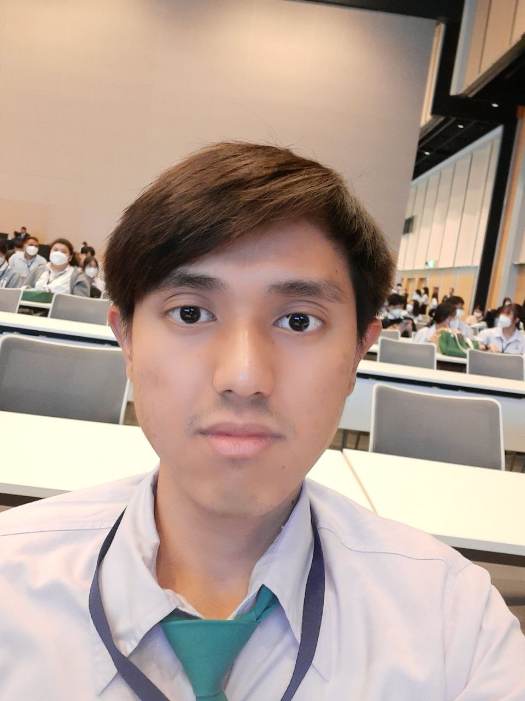

My profile

About me
Hello! I’m Suntisuk Sinthuakorn, a dedicated chemistry student with a passion for organic synthesis, polymers, and the extraction of natural products. My curiosity doesn't stop in the lab —when I have free time, I dive into exciting electronic projects, such as building Arduino-based pH meters and developing innovative web applications. Combining the precision of chemistry with the creativity of technology, I thrive on exploring new ideas and turning them into reality
Education
- Bachelor of Science Program in Chemistry - Silpakorn University (2020 - 2024)
- Master of Science Program in Chemistry - Silpakorn University (2024 - Present)
Work Experience
- Teaching assitant
- Preparation of Experiment
- Experiment Breifing
- laboratory Safety
- Laboratory Researcher
- Synthesis of gallic acid derivative etc.
- Synthesis of polymer such as carpolactam etc.
- Alkaloid (Mitragynine) extraction from kratom leaves.
- NMR interpretation of organic compound.
- HPLC analysis.
2022 - Present
2024 - Present
Skills
- Microsoft Office Suite
- Presentation
- Multilingual (Thai, English, Japanese)
- Organic Synthesis
- Polymer Synthesis
- Natural Product
- Molecular Modeling and Molecular Docking
- NMR (Bruker 300MHz)
- HPLC (shimadzu Nexera LC-40 series)
- Electronic circuit design and microcontroller (Arduino and ESP8266 or ESP32)
- Computer Programing
- Genarative AI
Award and certification
- International Conference (PACCON2024)
- AI for All From Basics to GenAI Practice_AI for All From Basics to GenAI Practice - Course Completion Certificate